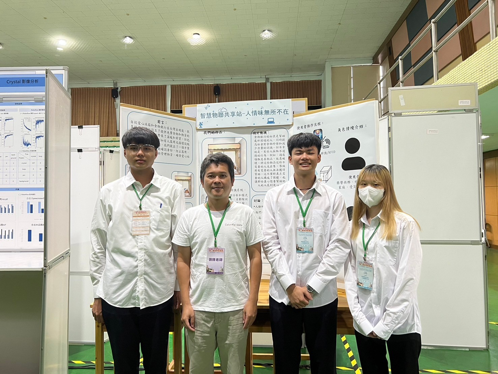
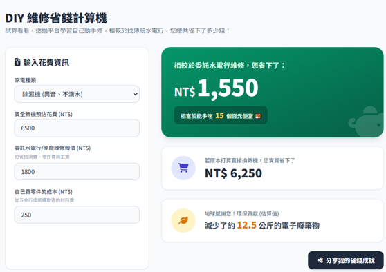
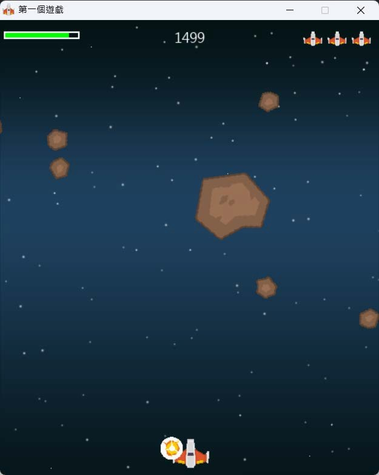
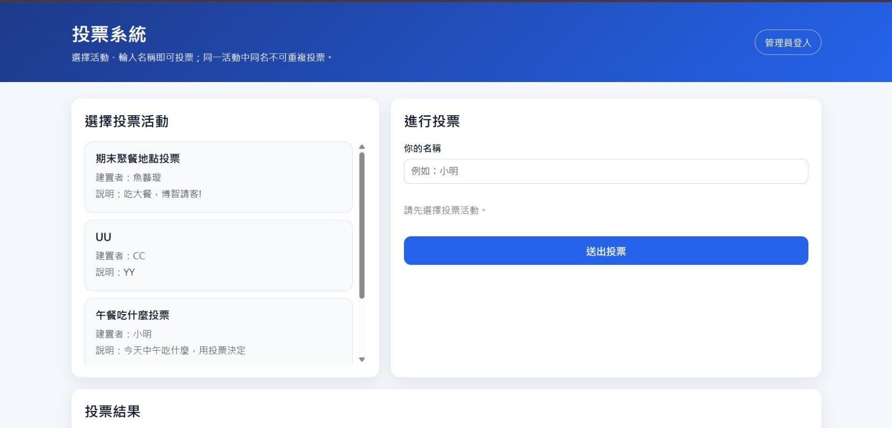
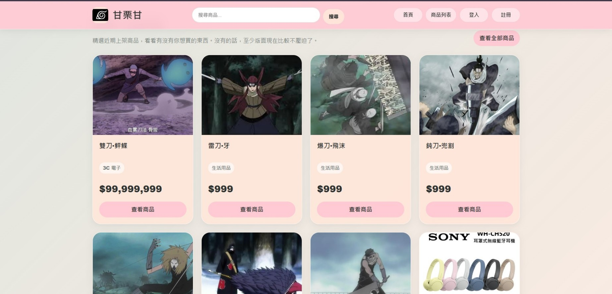

自學網頁與太空生存戰
從遊戲製作開始接觸網站風格，進一步學習 HTML、CSS 與 JavaScript。
Experience
把經歷整理成時間軸與表格，讓老師不用在一堆文字裡撈重點。撈重點這件事，連 AI 都覺得辛苦。
Timeline
從自學、競賽、實習到大學課程，逐步累積實作與表達能力。
從遊戲製作開始接觸網站風格，進一步學習 HTML、CSS 與 JavaScript。
負責程式設計、文書編輯與口頭報告，整合 C#、RFID、人臉辨識與 Webduino。
從組隊、線上會議、技術學習到正式發表，逐步克服報告恐懼。
學習硬體設備操作、網路線製作、問題除錯與工作現場溝通。
| 類別 | 內容 | 對應能力 |
|---|---|---|
| 競賽 | 第二區科學展覽會佳作 | 程式設計、研究整理、簡報表達 |
| 競賽 | 大手攜小手技職校院智慧創新應用競賽優等 | 團隊合作、系統規劃、問題解決 |
| 競賽 | 全國高級中等學校小論文寫作比賽甲等 | 資料蒐集、文書處理、論述能力 |
| 證照 | 電腦應用軟體丙級、商教會數位科技能力檢定基礎 | 基礎實作、細心與耐心 |
| 證照 | TQC Word、Excel、中文輸入、英文輸入實用級 | 文書排版、資料整理、輸入效率 |
Gallery
目前使用原創示意圖避免把證件或他人照片直接放到公開網站。要交作業時可以把這些圖片替換成你的活動照。





